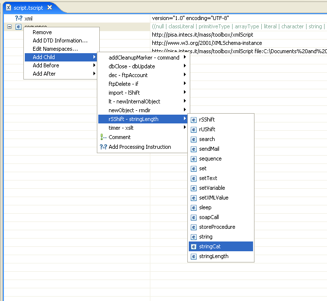
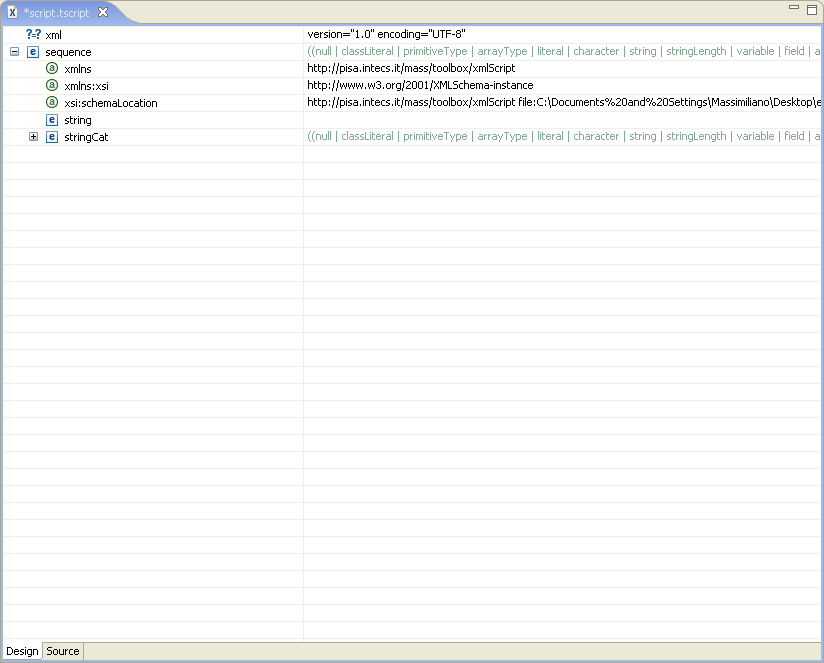

To add a tag select one existing tag and right click on it.

Three choices can be made on the insertion of a tag:
As shown in the picture, the tag to insert can be chosen from the child menus, where all tags defined into the schema are grouped alphabetically.

A comment can be inserted also, selecting the "Comment" item.